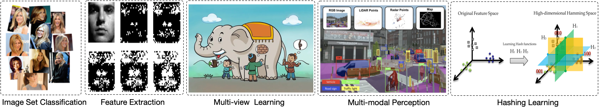

Zhenwen Ren
Professor, Doctoral Supervisor, CCF Senior Member, and IEEE Member
School of National Defence Science and Technology, Southwest University of Science and Technology, China, 2015-
Sichuan Civil-military Integration Institute, China, 2022-
Southwest Automation Research Institute, China, 2022-
School of Computer Science and Engineering, Nanjing University of Science and Technology, China, 2017-2021
Alibaba Group, China, 2014
Email: rzw@njust.edu.cn
招生信息
中文简历
任珍文，教授，博士生导师，中国兵器装备集团五八所特聘研究员，四川省军民融合研究院数据资源中心副主任，四川省学术和技术带头人后备人选。近年来，聚焦于多模态智能方向，在人工智能领域的国际顶级会议和期刊以第一或通讯作者发表论文90余篇，包括IEEE TIP、IEEE TNNLS、CVPR、AAAI、Multimedia等CCF-A类和中科院1区论文50余篇、影响因子大于10的10篇，ESI高被引论文2篇；授权/受理国家发明专利10余项，软件著作权3项；主持国家自然科学基金、中央军委科技委基础加强计划、装发子课题、国防科工局专项子课题、四川省科技厅应用基础研究、四川省科技厅重大科技专项子课题、中央引导地方科技发展资金项目子课题等横纵向项目20余项；担任《工程科学学报》、《兵工自动化》等期刊青年编委，中国兵器装备五八所、中国空气动力研究与发展中心、自然科学基金委的项目评审专家；担任IEEE TPAMI、IEEE TIP、IEEE TNNLS、IEEE TCYB等20余个国际顶级期刊审稿人。多次受邀担任CVPR、IJCAI、AAAI、NIPS等CCF A类会议程序委员会（高级）委员。曾获江苏省人工智能学会优秀博士论文、中国自动化学会科学技术进步奖二等奖、中国兵器装备集团科学技术进步奖一等奖与二等奖、国防科学技术进步奖二等奖与三等奖、中国图象图形学学会科学技术进步奖二等奖等奖项。
Research Interests

- Image set classification: it constructs an image set consisting of multiple images, and then measures the distance between two sets.
- Feature extraction and feature selection: it extracts or selects the important features of high-dimensional data for addressing the curse of dimensionality.
- Multiple kernel learning: it learns an optimal consensus kernel from a candidate kernel pool.
- Mult-view clustering: it integrates the supplementary and consistent information of multiple feature extractors for clustering tasks.
- Multi-modal perception: it fuses the data collected from multiple sensors for environmental perception.
- Hashing learning: it transforms data from original space to Hamming space for fast searching.
- Deep learning: it uses deep learning for clustering and classification tasks.
Reviewer Services
- IEEE Transactions on Pattern Analysis and Mahine Intelligence (IEEE T-PAMI)
- IEEE Transactions on Cybernetics (IEEE T-CYB)
- IEEE Transactions on Neural Networks and Learning Systems (IEEE T-NNLS)
- IEEE Transactions on Image Processing (IEEE T-IP)
- IEEE Transactions on Knowledge and Data Engineering (IEEE T-KDE)
- IEEE Transactions on Signal and Information Processing over Networks (IEEE T-SIPN)
- IEEE Transactions on Circuits and Systems for Video Technology (IEEE T-CSVT)
- IEEE Transactions on Network and Service Management (IEEE TNSM)
- ACM Transactions on Knowledge Discovery from Data(TKDD)
- IEEE Sensors Journal (IEEE SENS J)
- Information Fusion (INFFUS)
- Pattern Recognition (PR)
- Neurocomputing (NEUCOM)
- Neural Networks(NN)
- Neural Computing and Applications (NCAA)
- Information Sciences (INS)
- Knowledge-Based System (KBS)
- Applied Intelligence (APIN)
- International Journal of Intelligent Systems (INT2)
- International Journal of Machine Learning and Cybernetics (JMLC)
- Big Data Mining and Analytics (BDMA)
- Pattern Analysis and Applications
- Journal of Electronic Imaging
- Journal of Network and Computer Applications
- Artificial Intelligence Review
- IEEE Access
- Sensors
- Ecological Informatics
- ACM International Conference on Multimedia (MM 2024, 2023, 2022, 2021)
- ACM International Conference on Knowledge Discovery and Data Mining (KDD 2023, 2022)
- European Conference on Computer Vision (ECCV 2024, 2023, 2022, 2021, 2020)
- International Conference on Computer Vision (ICCV 2023, 2021, 2020, 2019)
- International Joint Conference on Artificial Intelligence (IJCA 2024, 2023, 2022, 2021, 2020)
- AAAI Conference on Artificial Intelligence (AAAI 2024, 2023, 2022, 2021, 2020)
- IEEE/CVF Conference on Computer Vision and Pattern Recognition (CVPR 2024,2023, 2022, 2021, 2020)
- CCF Conference on Artificial Intelligence (CCFAI 2021)
- IEEE International Conference on Multimedia and Expo (ICME 2023, 2022, 2021)
- Chinese Conference on Pattern Recognition and Computer Vision (PRCV 2020)
- China Conference on Data Mining (CCDM 2020)
- 计算机学报
- 计算机科学
Recent Updates
- [Aug 1, 2024] I have been invited to be a Senior Program Committe （SPC) for the AAAI 2025.New...
- [Jul 29, 2024] One paper has been accepted by IEEE Transactions on Neural Networks and Learning Systems.New...
- [Jul 16, 2024] Four papers have been accepted by ACM Multimedia (MM) 2024. New...
- [Jun 14, 2024] One paper has been accepted by IEEE Transactions on Multimedia.New...
- [Apr 17, 2024] Two papers have been accepted by International Joint Conference on Artificial Intelligence (IJCAI).New...
- [Feb 1, 2024] I have been invited to be a Area Chair for the ICML 2024.New...
- [Jan 15, 2024] One paper has been accepted by IEEE Transactions on Intelligent Transportation Systems.New...
- [Dec 9, 2023] One paper has been accepted by AAAI Conference on Artificial Intelligence (AAAI).
- [Nov 4, 2023] One paper has been accepted by IEEE Transactions on Consumer Electronics (TCE).
- [Oct 16, 2023] One paper has been accepted by IEEE Signal Processing Letters.
- [Sep 21, 2023] One paper has been accepted by IEEE Transactions on Multimedia.
- [Sep 20, 2023] One paper has been accepted by IEEE Transactions on Consumer Electronics (TCE).
- [Sep 06, 2023] One paper has been accepted by Pattern Recognition.
- [Jul 30, 2023] Two papers have been accepted by ACM Multimedia (MM) 2023 (CCF-A).
- [Jul 19, 2023] One paper has been accepted by Information Fusion.
- [Apr 28, 2023] One paper has been accepted by IEEE Transactions on Multimedia.
- [Apr 05, 2023] One paper has been accepted by IEEE Transactions on Circuits and Systems for Video Technology (TCSVT).
- [Apr 01, 2023] One paper has been accepted by IEEE/CAA Journal of Automatica Sinica (自动化学报英文版).
- [Mar 08, 2023] One paper has been accepted by IEEE Transactions on Consumer Electronics (TCE).
- [Feb 28, 2023] One paper has been accepted by IEEE Conference on Computer Vision and Pattern Recognition (CVPR).
- [Feb 14, 2023] One paper has been accepted by IEEE Transactions on Image Processing (TIP).
- [Jan 02, 2023] One paper has been accepted by IEEE Transactions on Circuits and Systems for Video Technology (TCSVT).
- [Dec 30, 2022] One paper has been accepted by IEEE Transactions on Computational Social Systems (TCSS).
- [Dec 18, 2022] One paper has been accepted by Pattern Recognition (PR).
- [Dec 12, 2022] One paper has been accepted by IEEE Transactions on Circuits and Systems for Video Technology (TCSVT).
- [Nov 26, 2022] One paper has been accepted by Pattern Recognition (PR).
- [Nov 19, 2022] One paper has been accepted by AAAI Conference on Artificial Intelligence (AAAI) (CCF-A).
- [Sep 29, 2022] One paper has been accepted by Pattern Recognition (PR).
- [Jun 30, 2022] Four papers have been accepted by ACM Multimedia (MM) 2022 (CCF-A).
- [Mar 26, 2022] Two papers have been accepted by IEEE Transactions on Multimedia.
- [Dec 02, 2020] One paper has been accepted by AAAI Conference on Artificial Intelligence (AAAI).
- [Oct 23, 2020] One paper has been accepted by IEEE Journal on Selected Areas in Communications (JSAC).
- One paper has been accepted by IEEE Transactions on Industrial Informatics (IEEE T-II).
- Congratulations to my student, Yuan Sun, his conference paper has obtained the Best Paper Award Finalist of NCAA2020.
- One paper has been accepted by IEEE Transactions on Cybernetics.
- One paper has been accepted by IEEE Transactions on Neural Networks and Learning Systems.
- One paper has been accepted by IEEE Transactions on Image Processing.
- ********* [MAY 1, 2020] BEGIN RECORDING *********